Station Côte-de-Liesse
Station Côte-Vertu
Station Du Collège
Station Kirkland
Station Namur
Station Pierrefonds-Roxboro
Gare Beaconsfield
Gare Dorval
Gare Sainte-Anne-de-Bellevue
Centre de transport Saint-Laurent
Terminus Grenet / De Serres
YUL Aéroport Montréal-Trudeau
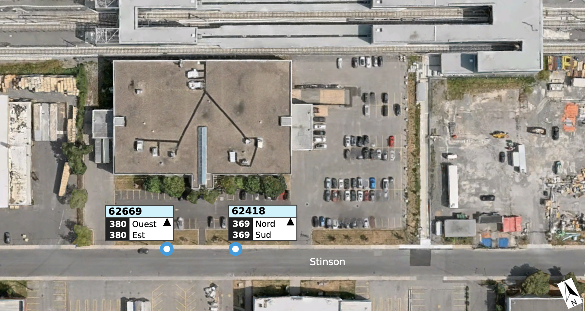
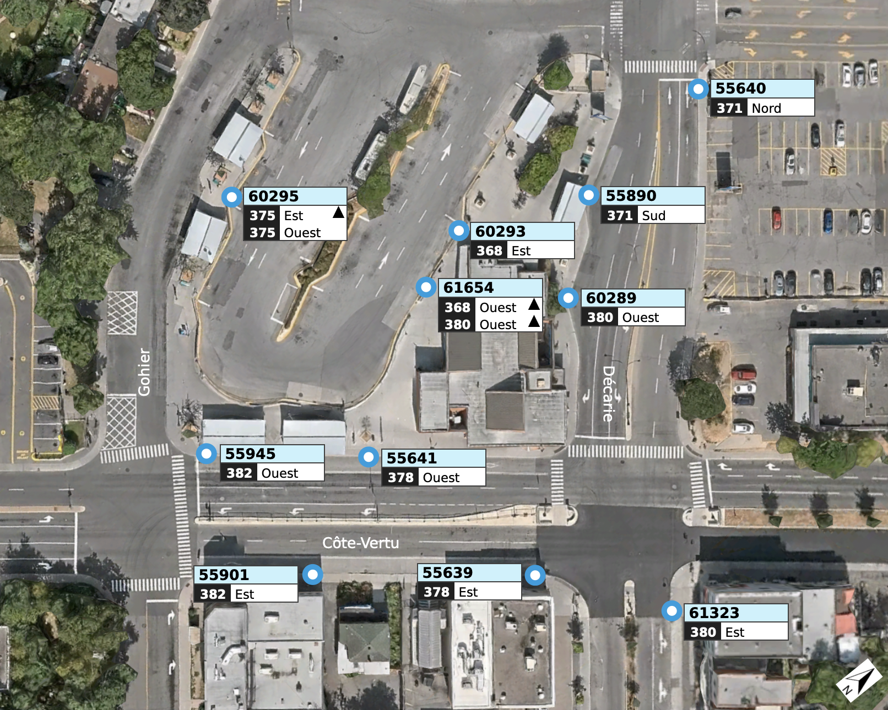
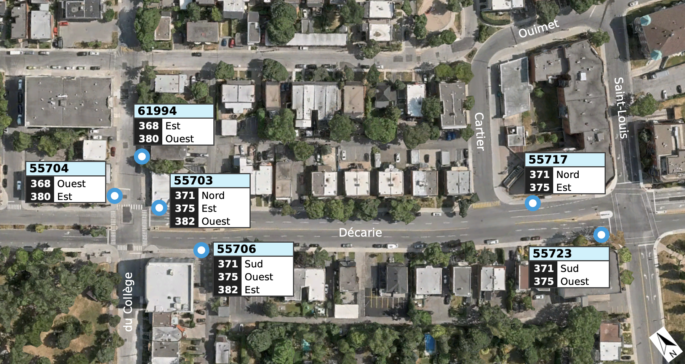
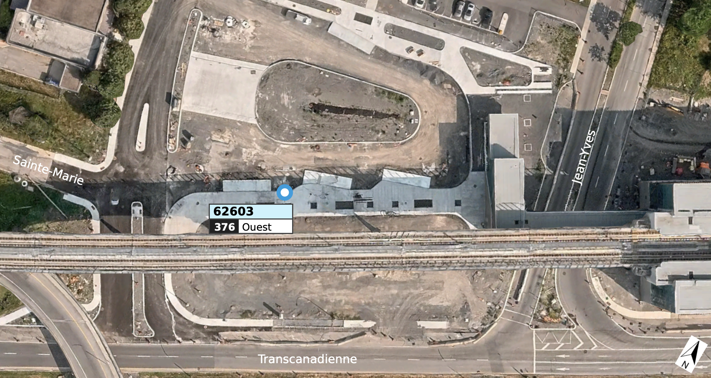
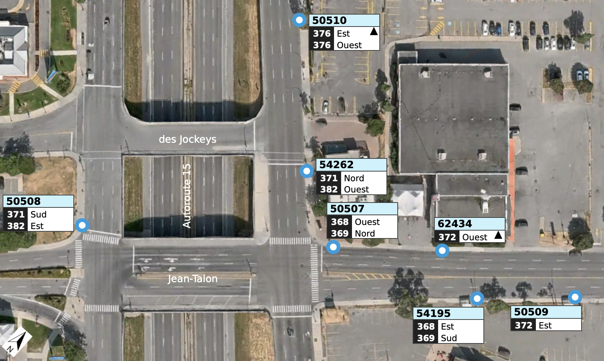
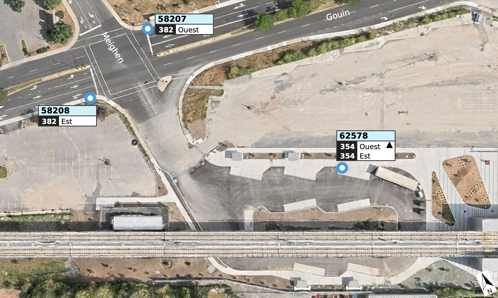
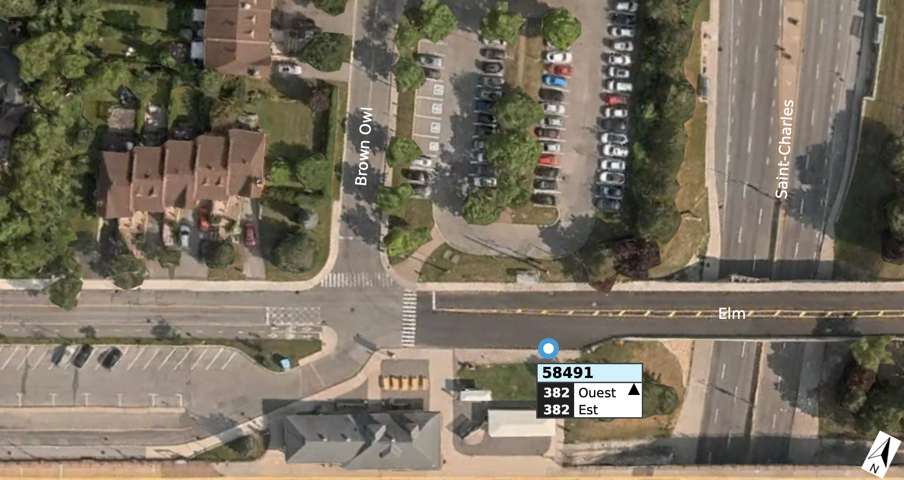
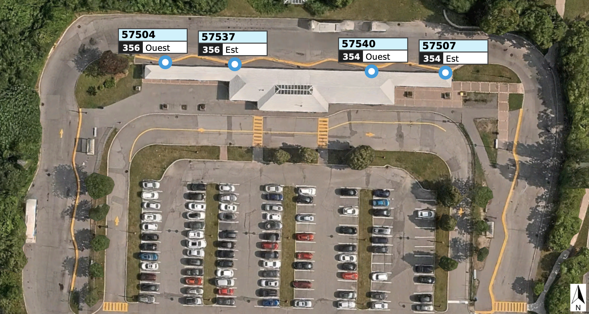
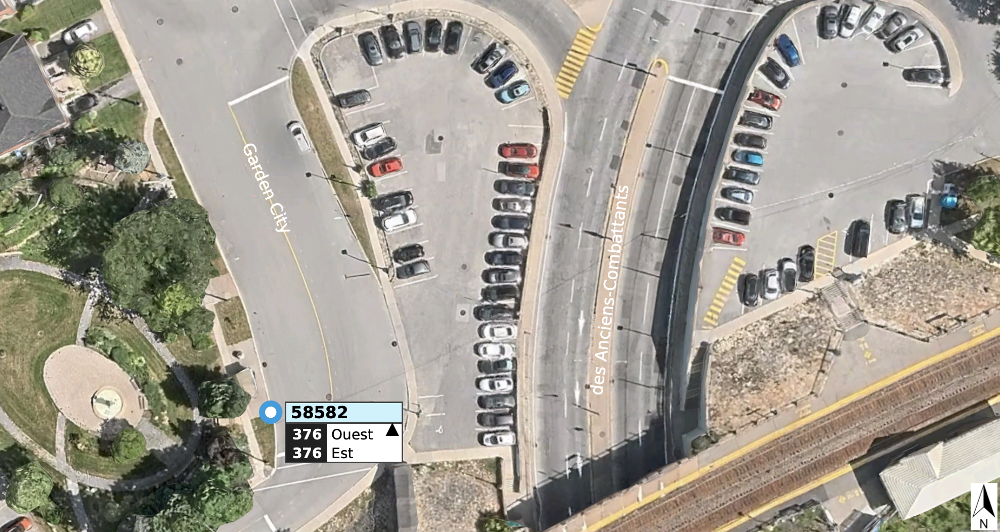
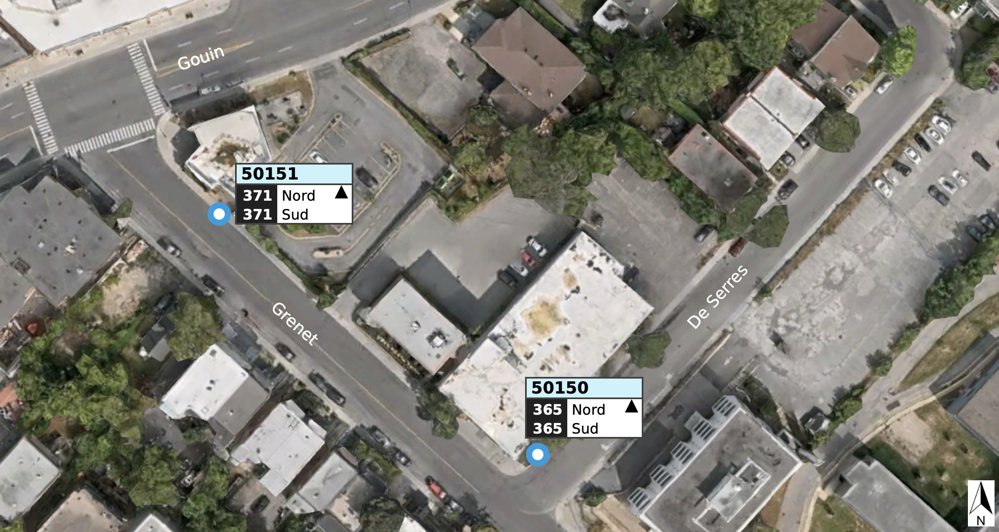
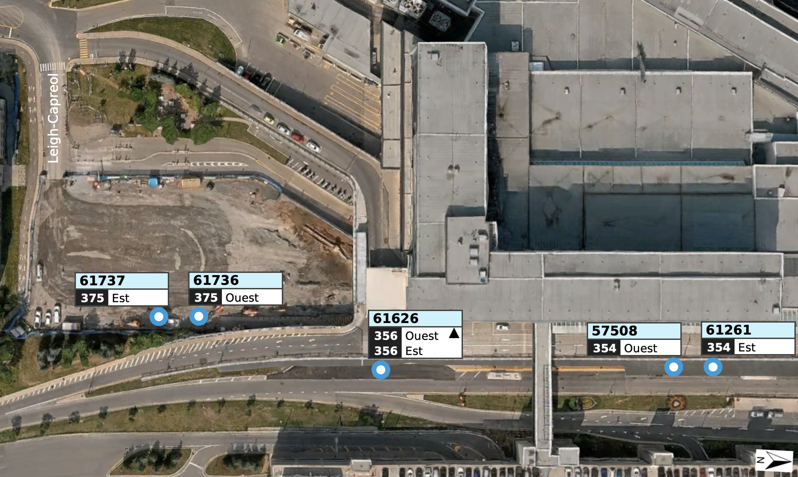